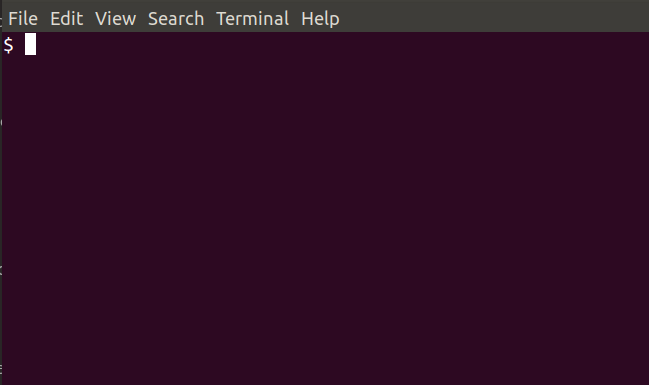

Welcome to Genghistask’s documentation!
GenghisTask the task scheduler.
#.. toctree:: # :glob: # :maxdepth: 3 # :hidden: # :caption: Recipe # # recipe/*
What is it ?
GenghisTask is an open source, lightweight and secured replacement for tools such as Jenkins, Visual-tom or Crontab UI. These tools are already nice CIs or schedulers and in GenghisTask, you will find again their traditional use case :
Launch a periodic rsync backup of a folder
Manage tasks with an UI, know what’s going on and debug without hassle
New use cases :
I need to launch my collection of usefull script on demand unscheduled
I need a centralized way to manage the several crontab and tasks of several server
I need rollback, version control and continuous integration of the new tasks
I have security concerns and should no be able to inject arbitrary code into a crontab via a web ui
I need to launch the task via HTTP as a Hook (or as a Lambda)
I need to run a script in any language, even if the scheduler source code is in an other language.
|  |